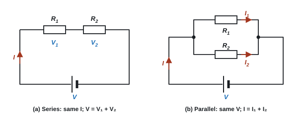
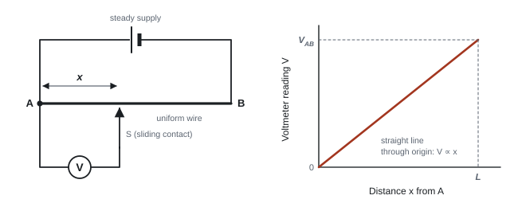
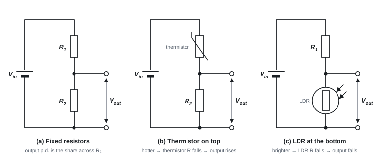
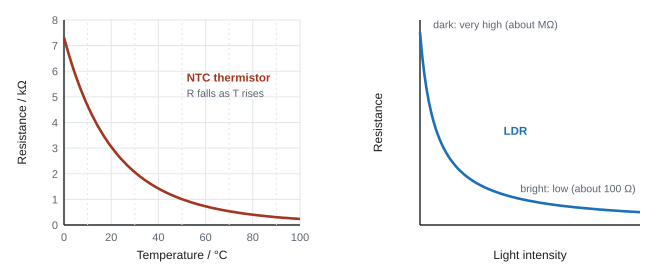
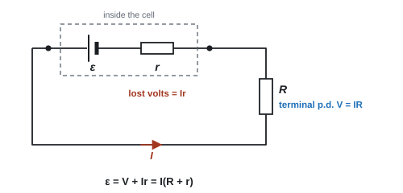
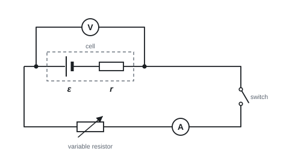
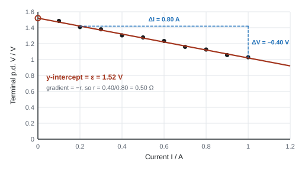

Circuits, Potential Dividers & E.M.F.
Two conservation laws do almost all the work in d.c. circuits: charge is conserved, and energy is conserved. On this page you'll use them to derive the rules for resistors in series and parallel, see how a potential divider turns a sensor into a useful voltage, and find out why a battery's terminal p.d. drops when it's working hard.
Spec67Charge and energy conservation in circuits
(a) Explain current distribution as a result of charge conservation. (b) Explain p.d. distribution as a result of energy conservation.
(a) Current: conservation of charge
- Charge can't be created or destroyed, and it doesn't pile up at any point in a circuit.
- So at a junction: total current in = total current out (Kirchhoff's first law).
- In a series circuit there are no junctions, so the current is the same at every point (including through the cell).
- In a parallel circuit the current splits between branches and recombines: I = I₁ + I₂.
(b) p.d.: conservation of energy
- Each coulomb gains energy in the source (the e.m.f.) and transfers all of it to the components before it returns.
- So round any closed loop: sum of e.m.f.s = sum of p.d.s (Kirchhoff's second law).
- In series: the p.d.s across the components add up to the e.m.f. (V = V₁ + V₂ for an ideal cell).
- In parallel: each branch forms its own loop with the source, so every branch has the same p.d. across it.
| Series | Parallel | |
|---|---|---|
| Current | same everywhere | splits: I = I₁ + I₂ (charge conservation) |
| p.d. | shared: V = V₁ + V₂ (energy conservation) | same across each branch |
junctions and loops
(a) 2.5 A flows into a junction. Two of the wires leaving it carry 0.8 A and 1.1 A. Current in the third wire?
2.5 = 0.8 + 1.1 + I, so I = 0.6 A (out of the junction)
(b) A 12.0 V cell (negligible internal resistance) is in series with a lamp and a resistor. The lamp has 7.5 V across it.
p.d. across resistor = 12.0 − 7.5 = 4.5 V
(c) Two lamps are now put in parallel with each other in place of the single lamp. The p.d. across the resistor is 5.0 V. p.d. across each lamp = 12.0 − 5.0 = 7.0 V (the same for both, because they are in parallel).
Indicative points from a 6-mark series-and-parallel question (WPH12 Jun 2022):
- current is the rate of flow of charge
- current is the same at all points in a series circuit (current in C = current in the cell)
- current into a junction = current out of it (current in C = current in A + current in B)
- p.d. is energy transferred per unit charge
- p.d. is shared between components in series (p.d. across C + p.d. across A = e.m.f.)
- p.d. is the same across components in parallel
Often asked as: a 6-mark explanation of the readings in a series-parallel circuit, "sum of e.m.f.s = sum of p.d.s" MCQs, slide-wire loop MCQs.
In the 6-mark version, link each rule to its conservation law in one sentence ("charge is conserved, so current into the junction equals current out"). The linkage marks need the "so".
Spec68Resistors in series and parallel
Derive the formulae for resistors in series and in parallel from charge and energy conservation, and use them.

Deriving the series formula
- Energy conservation: the p.d.s add: V = V₁ + V₂.
- Charge conservation: the same current I flows through both, so V₁ = IR₁ and V₂ = IR₂. For the whole combination, V = IR.
- Substitute: IR = IR₁ + IR₂. Divide by I:
Series
Deriving the parallel formula
- Charge conservation: the currents add: I = I₁ + I₂.
- Energy conservation: each branch has the same p.d. V, so I₁ = V/R₁ and I₂ = V/R₂. For the whole combination, I = V/R.
- Substitute: V/R = V/R₁ + V/R₂. Divide by V:
Parallel
Useful shortcuts
- Two resistors in parallel: R = R₁R₂ / (R₁ + R₂) ("product over sum").
- n equal resistors R in parallel: R/n.
- A parallel combination is always less than the smallest resistor in it. Adding another branch always lowers the total resistance (there is an extra path for charge).
Solving a network
- Combine each parallel group into one resistance (invert at the end!).
- Add the series parts to get the total resistance.
- Total current I = V/Rtotal.
- Work back: p.d. across each part = IR, then the current in each branch = V/R for that branch.
series and parallel network
A 6.0 Ω resistor is in series with a parallel pair of 12 Ω and 4.0 Ω, across a 9.0 V supply (negligible internal resistance). Find the current in each resistor.
Parallel pair: R = (12 × 4.0)/(12 + 4.0) = 48/16 = 3.0 Ω
Total: 6.0 + 3.0 = 9.0 Ω, so I = 9.0/9.0 = 1.0 A (this flows through the 6.0 Ω resistor)
p.d. across the 6.0 Ω = 1.0 × 6.0 = 6.0 V, so the parallel pair has 9.0 − 6.0 = 3.0 V across it
12 Ω: 3.0/12 = 0.25 A; 4.0 Ω: 3.0/4.0 = 0.75 A. Check: 0.25 + 0.75 = 1.0 A ✓
Resistors \(R_1\), \(R_2\) and \(R_3\) are in series. There are no junctions, so by conservation of charge the same current \(I\) flows through each of them.
By conservation of energy, the energy each coulomb gives to the whole combination is the sum of what it gives to each resistor:
\[ V = V_1 + V_2 + V_3 \]Write each p.d. as \(IR\), using the total resistance \(R_T\) for the whole combination:
\[ IR_T = IR_1 + IR_2 + IR_3 \]\(I\) is the same in every term, so divide through by it:
\[ \boxed{R_T = R_1 + R_2 + R_3} \]Resistors \(R_1\), \(R_2\) and \(R_3\) are in parallel. Each one connects the same two points, so by conservation of energy the p.d. \(V\) across each is the same.
By conservation of charge, the current from the supply splits between the branches and the branch currents add up to it:
\[ I = I_1 + I_2 + I_3 \]Write each current as \(V/R\), using \(R_T\) for the whole combination:
\[ \frac{V}{R_T} = \frac{V}{R_1} + \frac{V}{R_2} + \frac{V}{R_3} \]\(V\) is the same in every term, so divide through by it:
\[ \boxed{\frac{1}{R_T} = \frac{1}{R_1} + \frac{1}{R_2} + \frac{1}{R_3}} \]Remember to take the reciprocal at the end: \(1/R_T\) is not the answer.
A 6.0 V supply with negligible internal resistance is connected to a 4.0 Ω resistor in series with a parallel pair of 6.0 Ω and 12 Ω resistors. Calculate the current from the supply and the current in the 12 Ω resistor.
Show solution
Combine the parallel pair first:
\[ \frac{1}{R_\parallel} = \frac{1}{6.0} + \frac{1}{12} = \frac{3}{12} \quad\Rightarrow\quad R_\parallel = 4.0\ \Omega \]Now it's two resistances in series: \(R_T = 4.0 + 4.0 = 8.0\ \Omega\), so
\[ I = \frac{V}{R_T} = \frac{6.0}{8.0} = 0.75\ \text{A} \]The p.d. across the parallel pair is \(IR_\parallel = 0.75 \times 4.0 = 3.0\ \text{V}\), and that same p.d. is across each branch:
\[ I_{12} = \frac{3.0}{12} = 0.25\ \text{A} \qquad \left(\text{and } I_6 = \frac{3.0}{6.0} = 0.50\ \text{A}; \ 0.25 + 0.50 = 0.75\ \text{A}\ \checkmark\right) \]- Series derivation (3 marks): "VT = V₁ + V₂", "IR_T = IR₁ + IR₂", "I is the same, so cancel I".
- Parallel derivation (3 marks): "IT = I₁ + I₂", "V/RT = V/R₁ + V/R₂", "V is the same, so cancel V". The final equation is on the formulae sheet, so quoting it alone scores nothing: the marks are for the conservation steps.
- Calculations: "use of resistors in parallel formula" and "use of resistors in series formula" are separate marks. Ratio methods are accepted as well as current methods.
Often asked as: derive a formula (3 marks), find a total or an unknown resistance, "show that" a combination is about some value, which network expression is correct (MCQ).
Forgetting to invert: 1/R = 11/3000 means R = 3000/11 = 273 Ω, not 3.7 × 10⁻³ Ω (Jan 2023 examiner report).
Leaving out a series resistor when adding up (using 15 Ω instead of 15 + 2 = 17 Ω, Oct 2023 examiner report).
Stating the conservation law without using it in the algebra.
Spec74Potential along a uniform wire
Understand how the potential varies with distance along a uniform wire carrying a current.
p.d. is proportional to length
- A uniform wire has the same material and the same cross-sectional area all along it. With a steady current I, the resistance of a length x is R = ρx/A, so the p.d. across that length is
Potential along a uniform wire
- The potential falls steadily (linearly) from the end connected to + to the end connected to −.
- A graph of p.d. against distance from one end is a straight line through the origin. Its gradient, the potential gradient (V m⁻¹), is constant: VAB/L, which also equals Iρ/A. Here A is in m² and ρ in Ω m.
- With a sliding contact S on the wire, the wire acts as a potential divider: AS : SB = VAS : VSB.

slide-wire readings
(a) A uniform wire 1.00 m long has 2.0 V across it. A voltmeter is connected between one end and a contact 35.0 cm along.
V = 2.0 × (0.350/1.00) = 0.70 V
(b) A cell of e.m.f. 1.50 V is connected across an 80.0 cm wire. Because the cell has internal resistance, the p.d. across the wire is only 1.44 V. Reading with the contact 25.0 cm from the end?
V = 1.44 × (25.0/80.0) = 0.45 V (use the p.d. across the wire, not the e.m.f.)
(c) A graph of V against x for a wire carrying 0.50 A has gradient 3.6 V m⁻¹. A = 1.5 × 10⁻⁷ m². Find ρ.
gradient = Iρ/A, so ρ = gradient × A / I = 3.6 × 1.5 × 10⁻⁷ / 0.50 = 1.1 × 10⁻⁶ Ω m
A uniform wire of length 1.00 m has a p.d. of 3.0 V across it. Calculate the p.d. between the end of the wire at 0 V and a point 0.35 m from it, and the potential gradient along the wire.
Show solution
\[ V = 3.0 \times \frac{0.35}{1.00} = 1.05\ \text{V} \approx 1.1\ \text{V} \qquad \text{potential gradient} = \frac{3.0\ \text{V}}{1.00\ \text{m}} = 3.0\ \text{V m}^{-1} \]- "p.d. is (directly) proportional to length"; V = Vtotal × x/l.
- Slide wire MCQs: "the ratio AS : SB equals R₁ : R₂".
- For a V against l graph: "gradient = ρI/A".
Often asked as: slide-wire MCQs, a voltmeter reading at part of a wire, ρ from a graph of V against length.
Using the cell's e.m.f. when the wire actually has the (smaller) terminal p.d. across it (Oct 2023 examiner report).
Giving the full p.d. or 0 V as the reading at an intermediate point. Find the fraction of the length first.
Spec75Potential dividers
Understand how a potential divider works and calculate p.d.s and resistances in one.
How it works
- Two resistors in series across a supply Vin carry the same current, so the p.d. across each is proportional to its resistance. The supply p.d. is shared in the ratio of the resistances:
Potential divider (ratio form)
Potential divider
- Vout is the p.d. across R₂ (the resistor the output is taken across). The bigger resistor takes the bigger share of the p.d.
- Uses: providing a fixed lower p.d., a variable p.d. (a potentiometer, see 76) and sensor circuits (thermistor or LDR, see 76).

Two ways to calculate
- Ratio method: Vout = Vin × R₂/(R₁ + R₂).
- Current method: I = Vin/(R₁ + R₂), then Vout = IR₂. Use this when there are more than two resistors.
Loading a divider
- If you connect a load (or a voltmeter that is not ideal) across R₂, it is in parallel with R₂, so the resistance of that part falls, its share of the p.d. falls, and Vout is lower than calculated.
- To avoid this, the load's resistance should be much bigger than R₂.
a divider, then loading it
A 9.0 V supply (negligible internal resistance) is across R₁ = 47 kΩ and R₂ = 22 kΩ in series.
(a) Vout = 9.0 × 22/(47 + 22) = 2.9 V
(b) A voltmeter of resistance 100 kΩ is connected across R₂. What does it read?
R₂ in parallel with the voltmeter: (22 × 100)/(22 + 100) = 18.0 kΩ
Reading = 9.0 × 18.0/(47 + 18.0) = 2.5 V, lower than 2.9 V.
(c) To get 3.0 V from a 12 V supply with R₂ = 1.0 kΩ: R₁ must take 9.0 V, three times as much as R₂, so R₁ = 3.0 kΩ.
The resistors are in series, so the same current flows through both, and the total resistance is \(R_1 + R_2\):
\[ I = \frac{V_{\text{in}}}{R_1 + R_2} \]The output is the p.d. across \(R_2\):
\[ V_{\text{out}} = IR_2 \quad\Rightarrow\quad \boxed{V_{\text{out}} = V_{\text{in}} \frac{R_2}{R_1 + R_2}} \]Equivalently, \(V_1 / V_2 = R_1 / R_2\): the p.d.s are in the same ratio as the resistances.
A 9.0 V supply is connected across a 1.0 kΩ resistor \(R_1\) in series with a resistor \(R_2\). (a) What value of \(R_2\) gives an output of 6.0 V across \(R_2\)? (b) A device of resistance 2.0 kΩ is connected across \(R_2\). Calculate the new output p.d.
Show solution
(a) \(R_2\) must take 6.0 V and \(R_1\) the remaining 3.0 V. The p.d.s are in the ratio of the resistances:
\[ \frac{R_2}{R_1} = \frac{6.0}{3.0} \quad\Rightarrow\quad R_2 = 2 \times 1.0 = 2.0\ \text{k}\Omega \](b) The device is in parallel with \(R_2\): \(R_\parallel = \dfrac{2.0 \times 2.0}{2.0 + 2.0} = 1.0\ \text{k}\Omega\). Then
\[ V_{\text{out}} = 9.0 \times \frac{1.0}{1.0 + 1.0} = 4.5\ \text{V} \]Connecting a load across the output lowers the resistance of the bottom half, so the output p.d. drops. To avoid this, the load's resistance should be much larger than \(R_2\).
Two 10 kΩ resistors form a potential divider across a 6.0 V supply. A student expects 3.0 V across one of them, but a voltmeter of resistance 10 kΩ reads only 2.0 V. Explain why, with a calculation.
Show solution
The voltmeter is in parallel with the resistor it measures: \(R_\parallel = \dfrac{10 \times 10}{10 + 10} = 5.0\ \text{k}\Omega\). The divider is now 10 kΩ and 5.0 kΩ, so
\[ V = 6.0 \times \frac{5.0}{10 + 5.0} = 2.0\ \text{V} \]The voltmeter draws current and lowers the resistance of that part of the circuit. A voltmeter should have a resistance much larger than the component it measures (a digital voltmeter has about 10 MΩ).
- "Uses ratio of resistances to p.d.s" is the standard first mark.
- Why a measured Vout is lower than calculated (one mark for each reason with its explanation): "the cell has internal resistance, so the terminal p.d. is less than the e.m.f."; "the wires/connections have resistance, so some p.d. is across them"; "the voltmeter has finite resistance, so it draws current and the parallel combination has less resistance than the resistor".
Often asked as: voltmeter reading across one resistor, a minimum or maximum output, an unknown resistance, why the measured value differs from the calculated one.
Giving the p.d. across the other resistor (Oct 2020 examiner report: the common wrong answer). Check which component the output is taken across.
Explaining a low reading using only wire resistance and ignoring the voltmeter's own resistance.
Spec76Potential dividers with sensors
Analyse potential dividers where one resistance can vary, including thermistors and light-dependent resistors (LDRs).
Potentiometer
- A potentiometer is a resistor with a sliding contact: the slider splits it into two parts, R₁ and R₂, that form a divider. Moving the slider gives any output from 0 V up to Vin.
- A variable resistor used in series with a component (as a rheostat) can't bring the p.d. across that component down to zero; a potentiometer can.
Sensor circuits
- A thermistor (NTC): resistance falls as temperature rises (79).
- An LDR: resistance falls as light intensity rises (80).
- Put the sensor in series with a fixed resistor. The sensor's share of the p.d. follows its share of the resistance.
| Change | Sensor R | p.d. across sensor | p.d. across fixed resistor |
|---|---|---|---|
| thermistor gets hotter | falls | falls | rises |
| LDR gets brighter | falls | falls | rises |
| colder / darker | rises | rises | falls |
- So where you take the output from decides the behaviour: output across the fixed resistor rises with temperature or light; output across the sensor falls.
- The total current also changes: lower sensor R → lower total R → bigger current.

The four-step method for sensor questions
- Read the sensor's resistance from the graph at the stated temperature or light level, and quote it.
- Calculate the p.d. (ratio of resistances, or I = V/Rtotal then V = IR).
- Compare with the threshold in the question.
- Conclude in words: "so the fan switches on" / "so the student is wrong".
a thermistor-controlled fan
In circuit (b) of the divider figure, the thermistor is in series with a 2.0 kΩ resistor across a 6.0 V supply (negligible internal resistance). The output is the p.d. across the 2.0 kΩ resistor. A fan switches on when the output reaches 3.5 V. Use the thermistor graph.
(a) At 20 °C, Rth ≈ 3.0 kΩ: Vout = 6.0 × 2.0/(3.0 + 2.0) = 2.4 V. That is less than 3.5 V, so the fan is off.
(b) At 50 °C, Rth = 1.0 kΩ: Vout = 6.0 × 2.0/(1.0 + 2.0) = 4.0 V. That is more than 3.5 V, so the fan is on.
(c) Switch-on temperature: thermistor p.d. = 6.0 − 3.5 = 2.5 V, so Rth / 2.0 kΩ = 2.5/3.5, giving Rth = 1.4 kΩ. From the graph, that is about 40 °C.
an LDR light sensor
An LDR is in series with a 4.7 kΩ resistor across 5.0 V, with the output across the LDR. In the dark RLDR = 100 kΩ; in bright light RLDR = 300 Ω.
Dark: Vout = 5.0 × 100/(100 + 4.7) = 4.8 V
Bright: Vout = 5.0 × 0.30/(0.30 + 4.7) = 0.30 V
The output is high in the dark, so it could switch on a street light.
An LDR is connected in series with a 10 kΩ resistor across a 6.0 V supply, with the output taken across the LDR. The LDR's resistance is 100 kΩ in the dark and 1.0 kΩ in bright light. Calculate the output p.d. in each case and explain why the circuit is suitable for switching on a light at night.
Show solution
\[ V_{\text{dark}} = 6.0 \times \frac{100}{10 + 100} = 5.5\ \text{V} \qquad V_{\text{bright}} = 6.0 \times \frac{1.0}{10 + 1.0} = 0.55\ \text{V} \]In the dark the LDR has a much larger resistance than the fixed resistor, so it takes most of the supply p.d. and the output is high. In bright light it takes only a small share. A switching circuit set to turn on above, say, 3 V will light the lamp only when it gets dark.
A thermistor and a 1.5 kΩ fixed resistor are connected in series across a 12 V supply. The output is taken across the fixed resistor. At 20 °C the thermistor's resistance is 3.5 kΩ. (a) Calculate the output p.d. at 20 °C. (b) Explain what happens to the output as the temperature rises. (c) A fan switches on when the output reaches 6.0 V. Find the thermistor's resistance at that moment.
Show solution
(a) \(V_{\text{out}} = 12 \times \dfrac{1.5}{3.5 + 1.5} = 3.6\ \text{V}\)
(b) As the temperature rises, more conduction electrons are released in the thermistor, so its resistance falls. The fixed resistor now has a larger share of the total resistance, so it takes a larger share of the 12 V: \(V_{\text{out}}\) rises.
(c) 6.0 V is half of 12 V, so the two resistances must be equal: the thermistor is 1.5 kΩ.
For a 6-mark "explain what happens" question, write a chain with one link per sentence: temperature rises → more conduction electrons in the thermistor → its resistance falls → it takes a smaller share of the total resistance → smaller p.d. across it → larger p.d. across the fixed resistor → the voltmeter reading rises. Name a specific change ("temperature rises"), not just "the temperature changes".
- Calculation route: read R from the graph, "ratio of resistances = ratio of p.d.s" (or the potential divider equation), compare and conclude.
- Model conclusion (WPH12 Oct 2023): "If the temperature goes below this level then the resistance of the thermistor increases, so the p.d. to the heater switch increases, so the switch does perform as required."
- 6-mark schemes often "allow converse statements" but do not allow contradictory statements about the current or p.d.
Often asked as: one sensor question in almost every paper: the p.d. or temperature at which something switches, a 6-mark reasoning chain, MCQs about what happens when light or temperature changes.
Stopping at the number without explaining what it means for the circuit (Oct 2023 examiner report: candidates were expected to explain what happens below 10 °C).
Using the wrong p.d. in R = V/I, or not subtracting the fixed resistor from the total (Jan 2021 examiner report).
Describing the sensor well but never reaching the circuit: the circuit marks are the ones most often missed (Oct 2019 examiner report).
- If an LDR's resistance falls at a fixed e.m.f., the total power P = V²/Rtotal rises (WPH12 Jun 2023).
- A voltmeter's resolution as an argument: a p.d. smaller than the last digit can't be detected (WPH12 Jan 2021).
- Doubling the supply e.m.f. more than doubles a thermistor-circuit reading: the bigger current heats the thermistor, so its resistance falls too (WPH12 Jun 2021).
Spec77E.m.f. and internal resistance
Define e.m.f., understand internal resistance, and tell e.m.f. apart from terminal p.d.
Definitions
- Electromotive force (e.m.f.), ε: the energy transferred to electrical energy per unit charge passing through the source (the work done by the source per coulomb). Unit: volt. It is not a force.
- p.d.: energy transferred from electrical energy to other forms per unit charge, in a component.
- Internal resistance, r: the resistance of the materials inside the source. Some energy per coulomb is dissipated as heat inside the cell.
- Terminal p.d., V: the p.d. across the cell's terminals, which equals the p.d. across the external circuit.
- Lost volts: the p.d. across the internal resistance, Ir.

The equation
- Energy conservation round the loop: e.m.f. = p.d. across R + p.d. across r:
Whole circuit
Terminal p.d.
- No current (open circuit, or a very high-resistance voltmeter alone across the cell): Ir = 0, so the terminal p.d. = e.m.f.
- Lower external R → bigger current → bigger lost volts → terminal p.d. falls.
- Short circuit (R = 0): the current is the largest possible, I = ε/r, and all the e.m.f. is across r.
- Applications: a car's headlights dim when the starter motor draws a huge current (big lost volts). High-voltage supplies are given a very large internal resistance so the current can never be dangerous.
terminal p.d. and lost volts
A cell has ε = 6.0 V and r = 0.80 Ω. It is connected to a 4.0 Ω resistor.
I = ε/(R + r) = 6.0/4.8 = 1.25 A
Terminal p.d. V = IR = 1.25 × 4.0 = 5.0 V; lost volts = Ir = 1.25 × 0.80 = 1.0 V (5.0 + 1.0 = 6.0 ✓)
Power wasted in the cell = I²r = 1.25² × 0.80 = 1.3 W. Short-circuit current = 6.0/0.80 = 7.5 A.
finding r
A high-resistance voltmeter reads 1.50 V across a cell on open circuit. With a 2.0 Ω resistor connected, it reads 1.20 V.
ε = 1.50 V. Current I = V/R = 1.20/2.0 = 0.60 A
Lost volts = 1.50 − 1.20 = 0.30 V, so r = 0.30/0.60 = 0.50 Ω
test a claim
A 12.0 V battery drives a 2.0 Ω heater. As the battery ages, r rises from 0.10 Ω to 0.50 Ω. A student claims the heater's power falls by at least 30%.
Before (r = 0.10 Ω): I = 12.0/2.1 = 5.71 A, P = I²R = 5.71² × 2.0 = 65.3 W
After (r = 0.50 Ω): I = 12.0/2.5 = 4.80 A, P = 4.80² × 2.0 = 46.1 W
46.1/65.3 = 0.706, so the power falls by about 29%. That is less than 30%, so the claim is wrong.
A cell of e.m.f. \(\varepsilon\) and internal resistance \(r\) drives a current \(I\) through an external resistance \(R\). Think of \(r\) as a resistor in series with \(R\). Energy conservation for each coulomb: energy gained = energy given to \(R\) + energy wasted in \(r\):
\[ \varepsilon = IR + Ir \quad\Rightarrow\quad \boxed{\varepsilon = I(R + r)} \]The terminal p.d. is the p.d. across the external resistance, \(V = IR\). Substitute:
\[ \varepsilon = V + Ir \quad\Rightarrow\quad \boxed{V = \varepsilon - Ir} \]\(Ir\) is often called the "lost volts": the energy per coulomb that never makes it out of the cell.
A cell of e.m.f. 1.5 V and internal resistance 0.50 Ω is connected to a 2.5 Ω resistor. Calculate the current, the terminal p.d. and the power wasted inside the cell.
Show solution
\[ I = \frac{\varepsilon}{R + r} = \frac{1.5}{2.5 + 0.50} = 0.50\ \text{A} \] \[ V = \varepsilon - Ir = 1.5 - (0.50 \times 0.50) = 1.25\ \text{V} \approx 1.3\ \text{V} \] \[ P_{\text{wasted}} = I^2 r = 0.50^2 \times 0.50 = 0.13\ \text{W} \]A battery of e.m.f. 9.0 V and internal resistance 1.5 Ω is connected to two 6.0 Ω resistors in parallel. Calculate (a) the current from the battery, (b) the terminal p.d., (c) the power in each 6.0 Ω resistor and (d) the energy dissipated inside the battery in one minute.
Show solution
(a) Two equal resistors in parallel: \(R = 6.0/2 = 3.0\ \Omega\). Then
\[ I = \frac{\varepsilon}{R + r} = \frac{9.0}{3.0 + 1.5} = 2.0\ \text{A} \](b) \(V = \varepsilon - Ir = 9.0 - (2.0 \times 1.5) = 6.0\ \text{V}\)
(c) Each resistor has the full 6.0 V across it (parallel), so
\[ P = \frac{V^2}{R} = \frac{6.0^2}{6.0} = 6.0\ \text{W} \](d) \(W = I^2 r t = 2.0^2 \times 1.5 \times 60 = 360\ \text{J}\)
Check: total power from the battery \(= \varepsilon I = 18\ \text{W}\) = 6.0 + 6.0 W in the resistors + 6.0 W in the battery. Energy is conserved.
- e.m.f.: "energy (supplied) to/per unit charge", "work done per unit charge", "work done moving unit charge round the whole circuit" or "terminal p.d. when the current is zero".
- Terminal p.d. lower than e.m.f. (3 marks): "p.d. is energy per unit charge"; "energy is dissipated in the battery (internal resistance)"; "so less energy per coulomb is available to the circuit". "Lost volts" is accepted.
- "There was no current in the battery, so no p.d. across the internal resistance."
Often asked as: define e.m.f., explain why the terminal p.d. drops, calculate r, the effect of changing R or of a larger current, "student claim" power comparisons, cells in series v parallel.
"With nothing connected there is no e.m.f." The e.m.f. is still there; it's the current (and so the lost volts) that is zero (Jan 2024 examiner report).
Writing ε = V − Ir. It is ε = V + Ir.
Calling e.m.f. a force, or defining it as "energy per unit current".
- Combining cells: in series the e.m.f.s add and the internal resistances add; identical cells in parallel keep the same e.m.f., but the internal resistance of the combination is lower (r/2 for two), so fewer volts are lost for a given current. Work out the current and the lost volts for each arrangement before comparing terminal p.d.s (WPH12 Jun 2019).
- Larger load power (e.g. a motor going uphill) → larger current → larger p.d. across r → more energy wasted as heat inside the battery (WPH12 Jun 2025).
Spec78Core practical 8: e.m.f. and internal resistance of a cell
Measure the e.m.f. and internal resistance of a cell.
Principle
- Rearrange ε = V + Ir as V = −rI + ε. Compare with y = mx + c: a graph of terminal p.d. V (y) against current I (x) is a straight line with gradient −r and y-intercept ε.

Core practical 8: method in brief
- Connect the cell in series with an ammeter, a variable resistor and a switch. Connect a voltmeter across the cell's terminals.
- Set the variable resistor to its maximum, close the switch, record V and I, then open the switch.
- Lower the resistance in steps to get 8–10 pairs of readings over as wide a range of current as possible. Keep the switch open between readings.
- Repeat and average. Plot V against I and draw the line of best fit.
- ε = the y-intercept; r = −gradient.

ε and r from the graph
Two points on the line of best fit: (0.20 A, 1.42 V) and (1.00 A, 1.02 V).
gradient = (1.02 − 1.42)/(1.00 − 0.20) = −0.40/0.80 = −0.50 V A⁻¹, so r = 0.50 Ω
ε = intercept = 1.42 + 0.50 × 0.20 = 1.52 V (or read it off the y-axis at I = 0)
Other graphs that work
| Plot | Gradient | Intercept |
|---|---|---|
| V against I | −r | ε (on the V axis) |
| I against V | −1/r | |
| (ε − V) against I | r | 0 |
| R against 1/I (from R = ε/I − r) | ε | −r (on the R axis) |
Errors, improvements and safety
- The cell warms up and runs down if current flows for long, so ε and r drift: open the switch between readings.
- Use a wide range of currents so the gradient is well defined. Use digital meters with suitable resolution.
- Safety: never short-circuit the cell (large current, hot wires and cell). Keep currents modest.
In CP8 a student's best-fit line passes through \((0.20\ \text{A}, 1.42\ \text{V})\) and \((1.00\ \text{A}, 1.06\ \text{V})\). Find the e.m.f. and internal resistance of the cell.
Show solution
\[ \text{gradient} = \frac{1.06 - 1.42}{1.00 - 0.20} = \frac{-0.36}{0.80} = -0.45\ \text{V A}^{-1} \quad\Rightarrow\quad r = 0.45\ \Omega \]Use \(V = \varepsilon - Ir\) with either point to find the intercept:
\[ \varepsilon = V + Ir = 1.42 + (0.20 \times 0.45) = 1.51\ \text{V} \]- Circuit (2–3 marks): "voltmeter in parallel with the cell", "ammeter in series", "variable resistor". The voltmeter may be across the variable resistor if nothing else is in the circuit.
- Equation and graph (4 marks): "ε = V + Ir (from conservation of energy)", "compare with y = mx + c", "e.m.f. is the y-intercept", "internal resistance is the negative of the gradient".
- "If no best-fit line has been drawn, only some marks are available." Units are needed on ε and r.
Often asked as: draw the circuit, explain how the graph gives ε and r, read ε and r off a graph, an R against 1/I graph, predict the new line if ε and r both double (gradient and intercept both double).
No variable resistor in the circuit (only one pair of readings possible), the voltmeter in the wrong place, or a thermistor drawn instead (Oct 2022, Jan 2024 examiner reports).
Dividing one V by one I to get r instead of using the gradient (Jan 2024 examiner report: max 1 mark).
Contradictions such as "the gradient is −r, so r is the inverse of the gradient", or "the gradient is R because R = V/I" (Oct 2022 examiner report).
Leaving the unit off ε (Jun 2023 examiner report).
Quick checks
A current of 5.0 A flows into a junction. One wire leaving it carries 2.0 A. What is the current in the only other wire leaving the junction, and what principle tells you?
Charge flowing into a point per second equals charge flowing out: \(5.0 = 2.0 + I\), so \(I = 3.0\ \text{A}\). That is conservation of charge.
Two 6.0 Ω resistors in parallel are connected in series with a 3.0 Ω resistor. What is the total resistance?
The parallel pair is \(6.0/2 = 3.0\ \Omega\); add the series 3.0 Ω to get 6.0 Ω. (15 Ω treats all three as series; 2.0 Ω treats all three as parallel.)
A potential divider uses \(R_1 = 3.0\ \text{k}\Omega\) and \(R_2 = 1.0\ \text{k}\Omega\) across 12 V. What is the p.d. across \(R_2\)?
\(V_{\text{out}} = 12 \times \dfrac{1.0}{3.0 + 1.0} = 3.0\ \text{V}\). The larger resistor, \(R_1\), takes the larger share (9.0 V).
An LDR and a fixed resistor form a potential divider, with the output across the LDR. The room gets brighter. What happens to the output p.d.?
More light releases more conduction electrons in the LDR, so its resistance falls. Its share of the total resistance, and so its share of the supply p.d., gets smaller. The current does increase, but the p.d. across the fixed resistor increases while the LDR's falls.
Why is the terminal p.d. of a cell less than its e.m.f. when it supplies a current?
\(V = \varepsilon - Ir\): the "lost volts" \(Ir\) are the energy per coulomb transferred to thermal energy inside the cell. Charge is never used up.
In Core Practical 8, a graph of terminal p.d. \(V\) (y-axis) against current \(I\) (x-axis) is plotted. Which is correct?
\(V = -rI + \varepsilon\) is \(y = mx + c\) with \(m = -r\) and \(c = \varepsilon\). The x-intercept is the short-circuit current \(\varepsilon / r\).